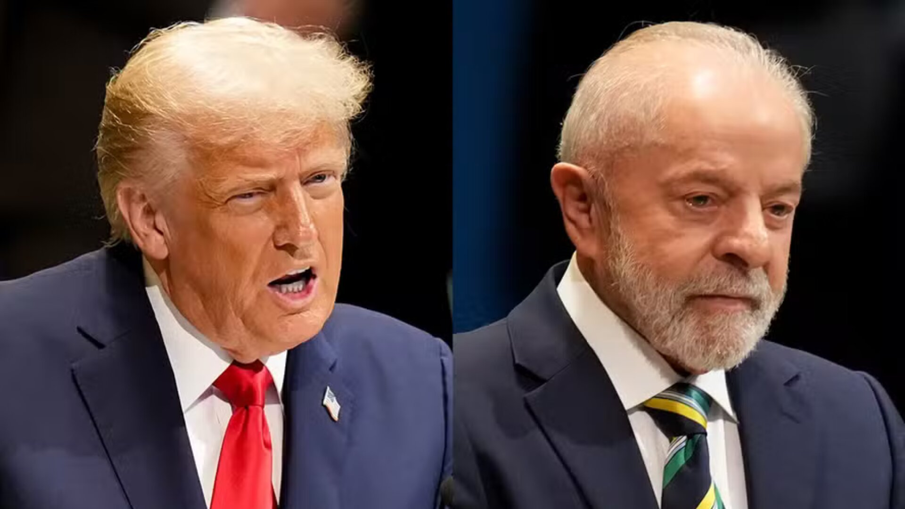

Trump diz que reunião com Lula foi 'muito boa', mas não garante acordo; brasileiro espera finalização nas próximas semanas
Presidente americano voltou a elogiar Lula um dia após reunião bilateral na Malásia que deu início às negociações comerciais entre os países. Trump também desejou parabéns a Lula, que completou 80 anos nesta segunda (27).
O presidente dos Estados Unidos, Donald Trump, disse nesta segunda-feira (27) que a reunião com Lula foi "muito boa" e voltou a elogiar o presidente brasileiro —mas não garantiu necessariamente um acordo. Lula, por sua vez, afirmou esperar que um acordo comercial entre Brasil e EUA deve ser finalizado nas próximas semanas. Trump chamou Lula de "muito vigoroso e impressionante" e desejou os parabéns a ele por seu aniversário de 80 anos nesta segunda.
A fala de Trump ocorre após um encontro com o presidente Lula no domingo (26) em Kuala Lumpur, na Malásia, que marcou o início formal das negociações comerciais entre os dois países em busca de uma resolução às tarifas de 50% impostas pelos EUA a produtos brasileiros. Leia mais sobre o encontro abaixo. As negociações comerciais entre representantes brasileiros e americanos iniciaram já nesta segunda-feira, logo após o encontro entre Lula e Trump. Segundo a repórter da Globo Raquel Krahenbuhl, uma cúpula brasileira de alto nível, incluindo o vice-presidente Geraldo Alckmin, o ministro das Relações Exteriores, Mauro Vieira, e o ministro da Economia, Fernando Haddad, irá a Washington na semana que vem para mais negociações.
Assim como Trump, Lula também demonstrou otimismo com o resultado da reunião e afirmou nesta segunda-feira: "Acho que vamos fazer um bom acordo". Também disse que ligará para o presidente americano sempre que achar necessário ao longo das negociações. Horas antes, ele já havia dito que "se depender dele e de Trump, vai ter acordo". O presidente brasileiro também disse que entregou uma lista com as reivindicações brasileiras — que incluem o fim do tarifaço e das sanções a ministros do STF e ao ministro da Saúde, Alexandre Padilha — e teve a impressão de que logo não haverá mais problema entre os dois países. Esta foi a primeira vez que os líderes se encontraram oficialmente para conversar sobre as tarifas. Durante o encontro, Lula e Trump também conversaram sobre outros assuntos, como Bolsonaro, a China e a crise entre EUA e Venezuela.
Fonte:
https://g1.globo.com/mundo/noticia/2025/10/27/trump-chama-lula-muito-vigoroso-da-parabens-apos-reuniao-tarifas.ghtml